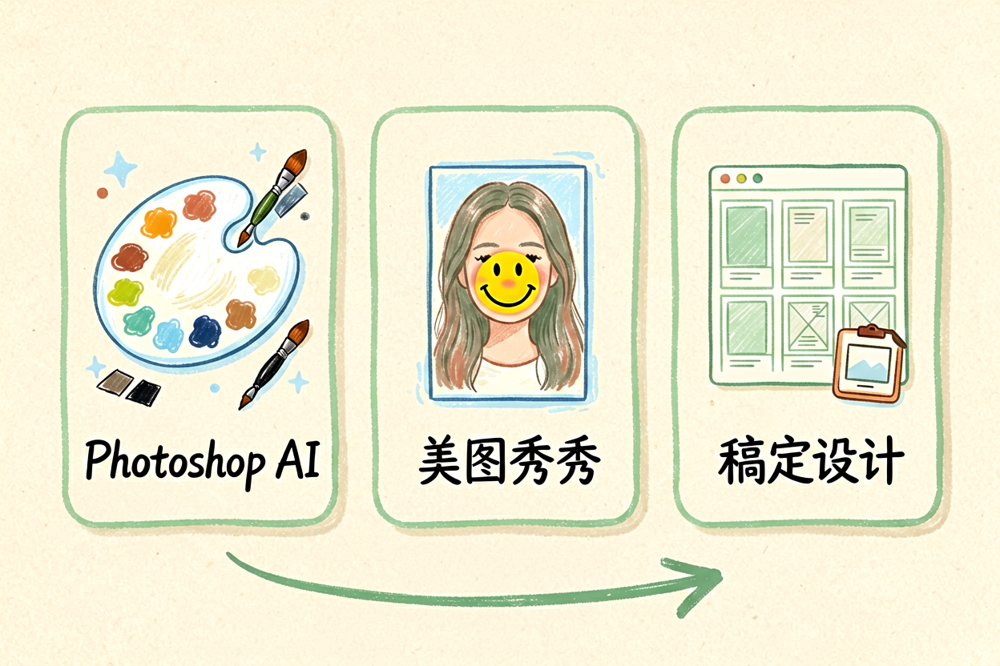
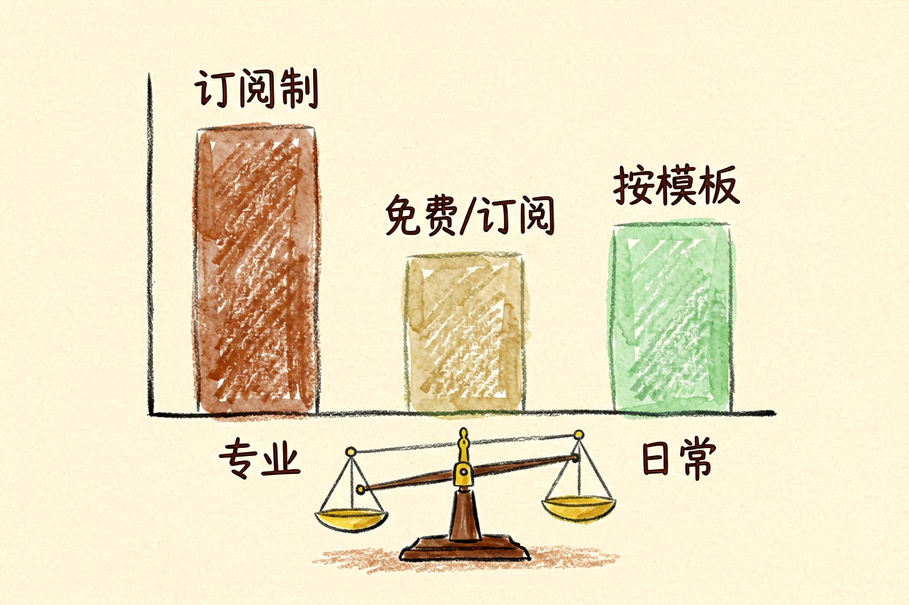
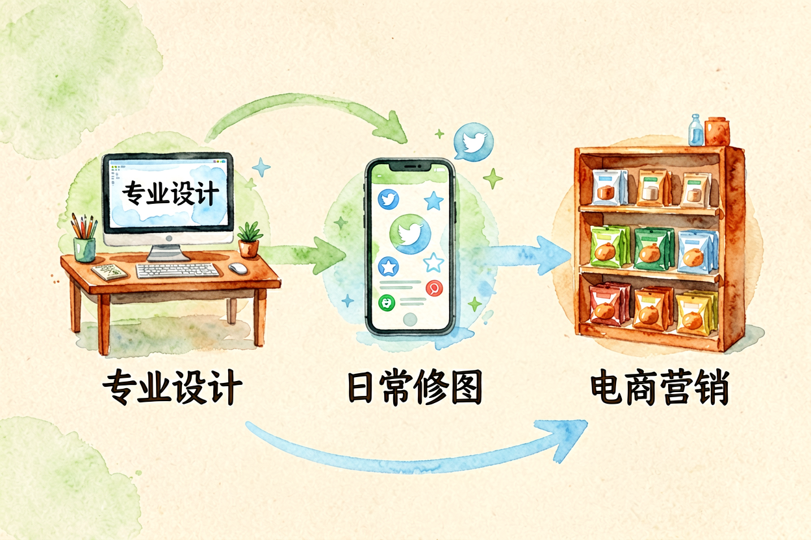
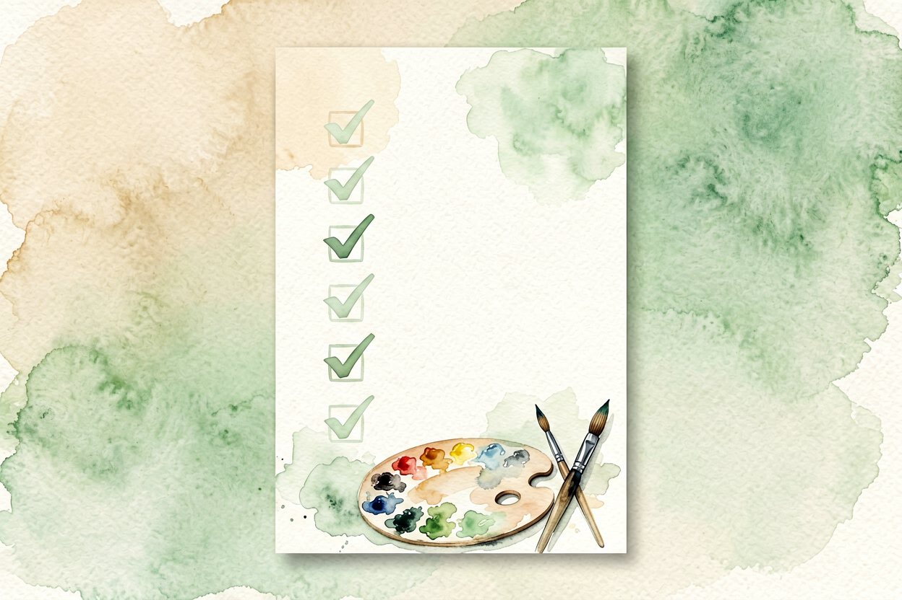

AI 修图工具对比：5 款免费工具各有所长
不是所有修图工具都全能，选对工具比堆砌软件更重要。5款免费工具实测，按需求挑不踩坑。
AI修图工具对比是本文的核心主题。 !配图1修图工具全景对比
{kind=link}
AI修图工具对比：先问你要修什么
修图不是一件事，至少分四类：去水印和杂物、抠图换背景、图片扩图、美颜精修。每类工具擅长不同，混着买套餐等于白花钱。先确定你要修什么，再挑工具，比看完排行榜直接下单更省钱。
AI 照片精修指南讲过精修的逻辑，但那是单工具深度用法。本文横向对比五款免费工具，告诉你每款适合什么场景，以及免费额度的真实边界。别只看宣传页，实际免费次数才是关键。
AI修图工具对比：去水印和杂物

Cleanup.pictures 主打一键去水印、去路人、去文字，无需注册，上传即修。免费版支持 720p 导出，无水印，单张图片处理速度快。适合临时应急，比如把合照里的路人 P 掉，或者去掉图片上的日期戳。
短板是分辨率限制。免费档最高 720p，发朋友圈够用，做印刷品不够。复杂背景（比如树叶、水面）去杂物时容易留下痕迹，需要手动补几笔。专业修图师不推荐用这款做主力工具，但普通用户临时救急完全够。
AI修图工具对比：抠图换背景

remove.bg 是抠图领域的老牌工具，边缘检测准确，头发丝级别的处理也能做。免费版每月一次高清下载，其余是预览分辨率，适合低频使用。电商卖家拍产品图、做头像、处理证件照，这款最省心。
缺点也很明显：免费额度太少，每月一次根本不够用。批量处理需要付费，单次 8 美元起。如果抠图是高频需求，建议直接上付费档，或者考虑 Canva 内置的抠图功能——会员权益更划算。
AI修图工具对比：图片扩图

FlatAI 支持文字描述扩图，输入「把背景扩展成海滩场景」，AI 会智能填充。无需注册，每日免费额度有限但够用。适合需要改变构图比、做社交媒体适配图的场景。
和AI 图片扩图技巧讲的 Midjourney 扩图不同，FlatAI 更轻量，上手零门槛。缺点是生成质量不稳定，复杂场景容易变形。做简单扩展还行，专业设计需求建议用付费工具。
AI修图工具对比：美颜精修

美图秀秀 AI 美颜功能覆盖磨皮、瘦脸、祛痣、美白，操作直觉，中文界面友好。免费版功能完整，广告可跳过。适合日常自拍、朋友圈配图、证件照快速美化。
短板是过度美颜容易导致失真，磨皮太狠会失去皮肤质感。专业修图师建议控制参数在 30% 以下，保留自然感。另外，美图秀秀内置广告较多，免费版体验一般，但整体仍是最适合新手的入门工具。
AI修图工具对比：选型建议

| 场景 | 推荐工具 | 免费额度 |
|---|---|---|
| 去水印、去路人 | Cleanup.pictures | 720p 无水印 |
| 抠图换背景 | remove.bg | 每月1次高清 |
| 图片扩图 | FlatAI | 每日有限额度 |
| 美颜精修 | 美图秀秀 | 功能完整有广告 |
| 综合设计 | Canva | 免费模板+AI功能 |
别贪多装五个，按你最高频的需求挑一款主力，搭配一款辅助就够了。AI 插画生成教程和AI 图片扩图技巧也值得收藏，遇到特定需求再翻。
关于 AI 修图工具对比，核心原则是按需选择。别被全能宣传忽悠，免费工具组合用，比买一个贵价套餐更划算。修图是技巧活，工具只是辅助，多练多试才能上手。
AI 修图工具对比的结论：清楚自己要修什么，选对工具，别盲目堆砌。新手从美图秀秀和 Cleanup.pictures 入手，足够应付日常需求。

本文信息核对于 2026-09-07。AI 产品的价格、免费额度与功能变动频繁，实际以各工具官网当前说明为准。